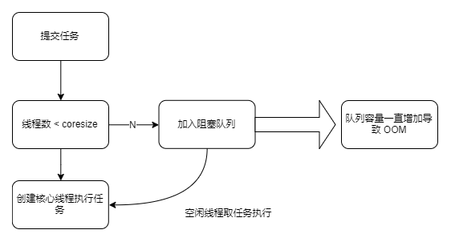
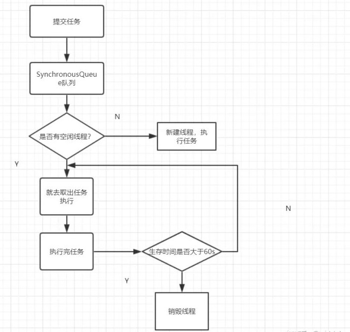
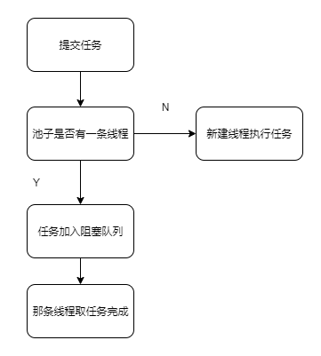

线程池就是一个管理线程的池子，可以降低创建和销毁线程带来的资源消耗
因为线程其实也是一个对象，创建一个对象，需要经过类加载过程，销毁一个对象，需要走GC垃圾回收流程，都是需要资源开销的。
重复利用，线程用完了再放回池子，达到了重复利用的效果
public ThreadPoolExecutor(int corePoolSize, int maximumPoolSize,long keepAliveTime,TimeUnit unit,
BlockingQueue<Runnable> workQueue,
ThreadFactory threadFactory,
RejectedExecutionHandler handler) corePoolSize 核心线程数
maximumPoolSize 线程池最大线程数
keepAliveTime 空闲线程存活时间
TimeUnit 线程空闲存活时间单位
workQueue 存放任务的阻塞队列
threadFactory 线程工厂
handler 饱和策略AbortPolicy 抛出一个异常，默认的
DiscardPolicy 直接丢弃任务
DiscardOldestPolicy 丢弃队列里最老的任务，将当前这个任务继续提交给线程池
CallerRunsPolicy 交给线程池调用所在的线程进行处理由于在线程池调用线程处理任务过程中出现的异常可能会被线程池捕获，所以对于任务的执行可能是无感知的，因此我们需要考虑线程池异常情况。
方法一：
@Test
public void test1() throws Exception {
ExecutorService executorService = Executors.newFixedThreadPool(5);
for (int i = 0; i < 5; i++) {
executorService.submit(new Runnable() {
@Override
public void run() {
try {
System.out.println("name: " + Thread.currentThread().getName());
Object a = null;
System.out.println(a.hashCode());
} catch (Exception e) {
System.out.println(e);
}
}
});
}
}方法二：
@Test
public void test2() throws Exception {
ExecutorService executorService = Executors.newFixedThreadPool(5);
for (int i = 0; i < 20; i++) {
Future<?> future = executorService.submit(new Runnable() {
@Override
public void run() {
System.out.println("name: " + Thread.currentThread().getName());
Object a = null;
System.out.println(a.hashCode());
}
});
try {
future.get();
} catch (Exception e) {
System.out.println(e);
}
}
}==ArrayBlockingQueue==
==LinkedBlockingQueue==
==SynchronousQueue==
==PriorityBlockingQueue==
==DelayQueue==
==newFixedThreadPool==
public static ExecutorService newFixedThreadPool(int nThreads) {
return new ThreadPoolExecutor(nThreads, nThreads,
0L, TimeUnit.MILLISECONDS,
new LinkedBlockingQueue<Runnable>());
}
==newCachedThreadPool==
public static ExecutorService newCachedThreadPool() {
return new ThreadPoolExecutor(0, Integer.MAX_VALUE,
60L, TimeUnit.SECONDS,
new SynchronousQueue<Runnable>());
}
用于并发执行大量短期的小任务。
使用SynchronousQueue作为工作队列，工作队列本身并不限制待执行的任务的数量。但此时需要限定线程池的最大大小为一个合理的有限值，而不是Integer.MAX_VALUE，否则可能导致线程池中的工作者线程的数量一直增加到系统资源所无法承受为止。
如果应用程序确实需要比较大的工作队列容量，而又想避免无界工作队列可能导致的问题，不妨考虑SynchronousQueue。SynchronousQueue实现上并不使用缓存空间
==newSingleThreadExecutor==
public static ExecutorService newSingleThreadExecutor(ThreadFactory threadFactory) {
return new FinalizableDelegatedExecutorService
(new ThreadPoolExecutor(1, 1,
0L, TimeUnit.MILLISECONDS,
new LinkedBlockingQueue<Runnable>(),
threadFactory));
}
适用于串行执行任务的场景，一个任务一个任务的执行
==newScheduledThreadPool==
public ScheduledThreadPoolExecutor(int corePoolSize) {
super(corePoolSize, Integer.MAX_VALUE, 0, NANOSECONDS,new DelayedWorkQueue());
}